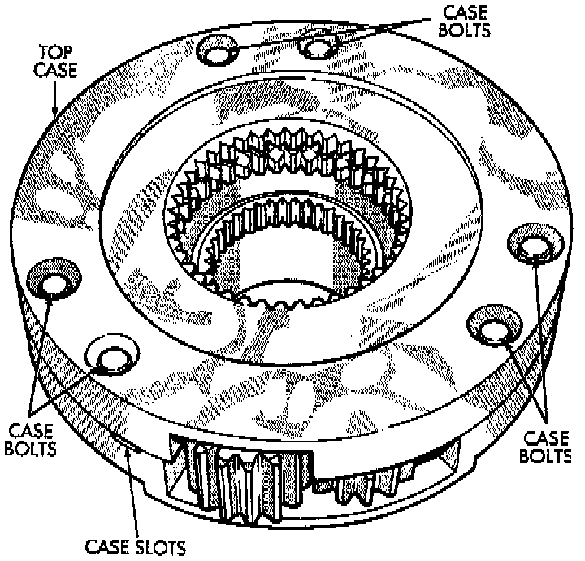
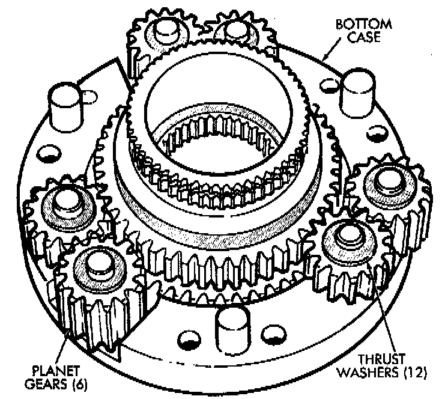
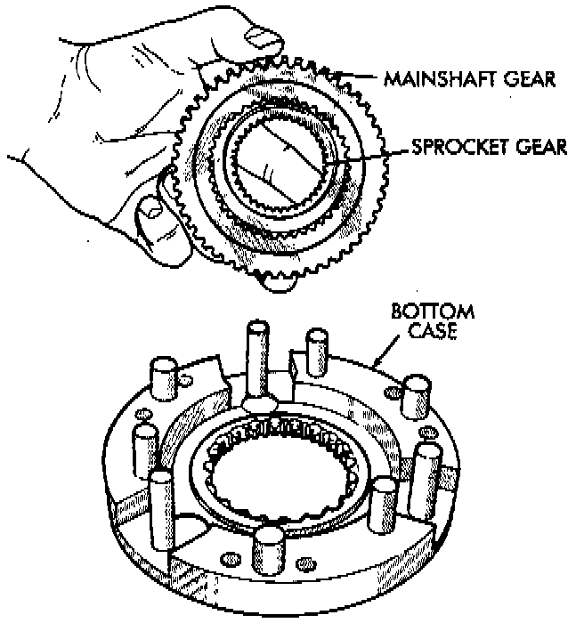

Differential Disassembly
1. Mark differential case halves for reference.2. Remove differential case bolts.
3. Invert differential on workbench.

4. Separate top case from bottom case. Use slots in case halves to pry them apart.

5. Remove thrust washers and planet gears from case pins.

6. Remove mainshaft and sprocket gears from bottom case. Note gear position for reference before separating them.